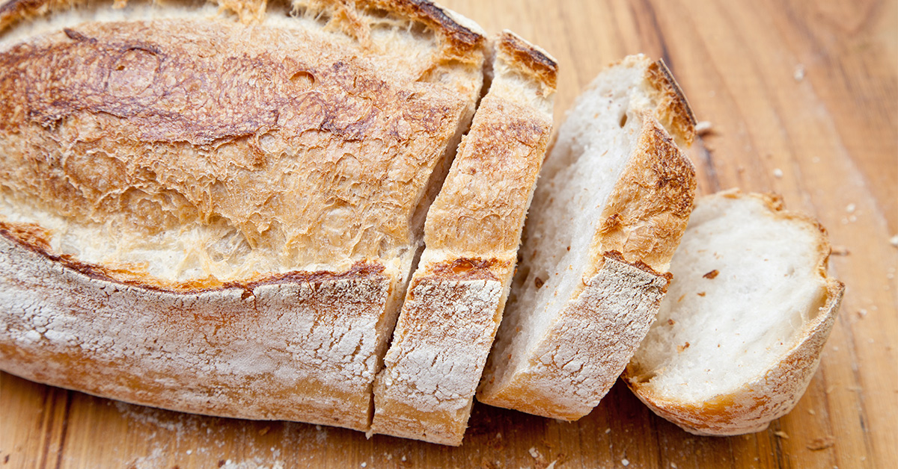

History of Bread
here are different types of bread such as Pizza, sourdough, banana bread, baguette, whole wheat bread etc. Bread is made from simple food stuff such as dough flour and water from baking. It is one of the oldest man made food. You can make different varieties of food using bread or different kinds of bread like Pizza rolls, Kebab, Garlic bread etc.
Brown bread vs white bread
I would recommend eating brown bread as it is the healthier bread because it has better advantages when it comes to nutrition, brown bread also has more fibre and more nutrients such as zinc, magnesium, folic acid and copper. To go deeper in detail there are different parts of the wheat grain, they are spilt into three parts such as Bran, Core and the germ. Bran is rich in fibre, vitamins and minerals it Is located in the outer layer of the whole grain. The core has proteins and carbohydrates in it, 80 percent of it is part of the wholegrain and finally the germ the smallest part of the whole grain has a decent load of vitamins, minerals, fat and protein. While the white bread only contains the endospore in it the middle layer that consists the proteins and carbohydrates in it. But at the end of the day it’s your choice.

Here are some interesting facts about bread
A rolled up piece of white bread was used to erase graphite before rubber erasers were invented.
facts
Within five years of the creation of the sliced bread machine, 80 percent of the bread sold in the United States had been sliced. Bread served as an absorbent plate in medieval times. Trencher was its name. Trenchers might be eaten, donated to the impoverished, or fed to the dogs afte r the meal. A trencher, according to legend, is the source of pizza. The term "baker's dozen" refers to a group of 13 products. The custom dates back to the Middle Ages, when bread was sold in little loaves, usually in dozens of 12 pieces. Because bakers tried to save weight or because the weight of the components differed, not all dozens were created equal. Bread had to be sold by weight, according to strict regulations. Customers were gaining weight by adding one additional loaf to their dozen.